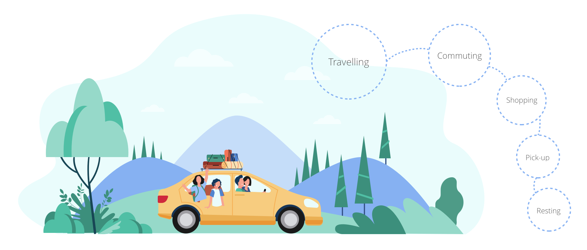

Scenario Builder
To-B platform, UX design, Web, Ant design
Scenario Builder is a platfrom than enpowers OEMs to build HMI PROACTIVE INTERACTIONS through a web portal.

People use cars for different kinds of purposes, and within every porpose, they experience a different scenario with various kinds of HMI functions.
And that's why we share such a proposal for end users:
To provide essential information proactively, for each of the scenarios.
This is a to B product, aiming for OEMs to serve their customers with better end user experience.
Therefore, we need to take both business users and end users into account.
After all, customer's success is our success.
This chart shows the tasks and roles of different stakeholders.
Product designers design scenarios.
The designers of Cerence would help OEMs to generate scenario templates. Afterwards, OEM designers could apply their own thoughts to the templates, or even create their own.
The process of designing scenarios.
The general process of designing the experience, is to identify the scenario and the corresponding rules, which is also a typical design thinking process.
Designers and managers work together to test and deploy scenarios.
This is a typical OA system, which involves different roles to work closely in the development of the scenarios. And they all focus in their own specified area.

The function structure describes the what users would do to fulfill the basic tasks provided in the system, and it provides a clear consensus between designers, product managers, and engineers.
The information structure introduces methods for structuring and organizing content in ways that effectively support a user’s journey through the system and facilitate desirable outcomes for customers and the business.
Here demonstrates a glimpse of the wireframe.
During the process of agile design and developmet, we created:
And here demonstartes the prototype of creating a rule,
including the input of attributes, selecting and editting conditions, and defining the actions.